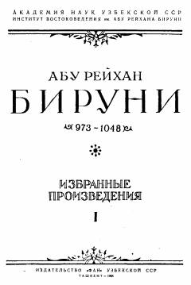

QXAbu Rayhon Beruniyning qadimgi xalqlar taqvimi va yil hisoblash tizimlariga bag'ishlangan ilmiy asari.
Ushbu asar buyuk qomusiy olim Abu Rayhon Beruniyning qadimgi xalqlarning vaqtni o'lchash usullari va yil hisoblash tizimlarini tahlil qiluvchi fundamental ilmiy mehnatidir. Kitobda tarix, astronomiya va madaniyat tarixi bo'yicha boy faktik ma'lumotlar keltirilgan bo'lib, u o'rta asrlar ilm-fani rivojini o'rganishda muhim manba hisoblanadi.